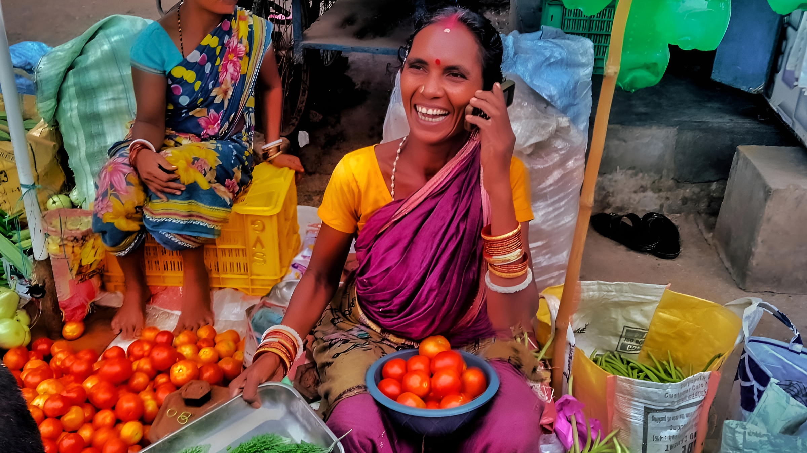

Your Problem. Your Voice. Our Follow-up.
Report genuine issues affecting your community. We review, document and follow up with the appropriate authorities or organizations where possible.
Every step will start soon!
Small reports can lead to meaningful change.
A damaged road. A broken street light. Poor sanitation. Water problems. Public infrastructure concerns.

"When communities speak,
problems become visible."
A simple way to make your community's concerns visible.
Community Voice provides a structured way for residents to report genuine local issues and help bring them to the attention of the appropriate authorities.
From report to follow-up.
A transparent process designed to keep reports organized and responsibly handled.
Report
Tell us what is happening. Provide the location, description and supporting evidence where possible.
Review
Every submission is reviewed. Reports and allegations remain unverified until appropriately assessed.
Verify
Where possible, available evidence and information are reviewed to understand the reported issue.
Follow Up
Genuine issues may be brought to the attention of the relevant authority or organization.
Track
Your report receives a unique reference ID so you can check its latest available status.
Outcome
When a meaningful response or update is received, the report can eventually be closed.
Speak up about issues that matter.
Choose a category that best describes the problem affecting your community.
Tell us what's happening.
Provide as much useful information as possible. Clear descriptions and supporting evidence help us understand the issue.
Provide the location of the issue.
Photographs can help explain the issue.
Don't submit unnecessary sensitive information.
What happened after you reported it?
Enter your unique Community Voice reference ID to view the latest available status.
Trust starts with transparency.
Our approach is built around responsible reporting, verification and privacy.
Verification First
A submitted complaint or allegation is not automatically treated as a proven fact.
Privacy Matters
Personal information should not be unnecessarily exposed publicly.
Responsible Follow-up
Genuine issues may be brought to the attention of the relevant authority.
Open Impact
We aim to publish appropriate anonymized statistics as the platform grows.
A small platform for a bigger voice.
Community Voice is an independent community initiative created to listen to local concerns, encourage responsible reporting and document follow-up on genuine public issues.
Our goal is simple: make it easier for ordinary people to speak about problems affecting their communities and encourage responsible action.
Community Voice is not a government authority, law-enforcement agency or emergency service.
Submitting a report does not guarantee that an authority will take action or that the issue will be resolved. For immediate danger or emergencies, contact the appropriate emergency service instead of waiting for a response from Community Voice.
Your community. Your voice. Your responsibility.
If something is affecting your community, don't simply ignore it. Tell us.
Report an Issue